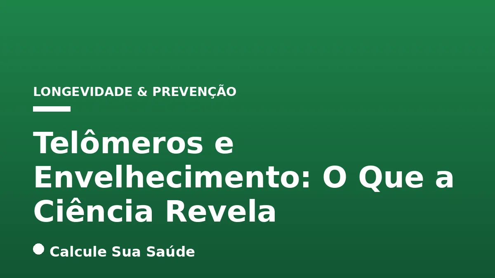

Aviso médico importante
Este conteúdo é educativo e informativo e não substitui a consulta, o diagnóstico ou o tratamento de um profissional de saúde. Em caso de sintomas, procure orientação médica.
Índice do Artigo
- 1. O Que São Telômeros e Por Que São Cruciais?
- 2. O Papel da Telomerase: A Enzima da Manutenção Telomérica
- 3. O Encurtamento Telomérico Como Biomarcador do Envelhecimento
- 4. Fatores Que Aceleram a Perda Telomérica
- 5. Consequências do Encurtamento Telomérico Acelerado
- 6. Telomeropatias: Quando a Disfunção da Telomerase é um Problema
- 7. Diagnóstico do Comprimento dos Telômeros e Marcadores Relacionados
- 8. Estratégias de Prevenção: O Poder do Estilo de Vida Saudável
- 9. Nutrientes e Compostos Bioativos para a Saúde Telomérica
- 10. Intervenções Farmacológicas e Terapêuticas: O Que a Ciência Explora
- 11. Mitos Comuns vs. O Que a Ciência Diz Sobre Telômeros e Longevidade
- 12. Pesquisas Brasileiras e o Cenário do Envelhecimento Populacional
- 13. Perspectivas Futuras na Pesquisa de Telômeros
- 14. Recomendações Finais para a Saúde Telomérica
- 15. Perguntas frequentes
O envelhecimento é um processo biológico complexo e multifacetado, e a busca por compreender seus mecanismos mais profundos tem sido uma das maiores empreitadas da ciência moderna. Entre os diversos fatores que contribuem para a idade biológica de um indivíduo, os telômeros emergem como estruturas de relevância central, atuando como verdadeiros relógios moleculares que ditam a vida útil de nossas células.
Localizados nas extremidades dos cromossomos, os telômeros são sequências repetitivas de DNA e proteínas que protegem a integridade do material genético. Sua função assemelha-se à das ponteiras plásticas dos cadarços, que impedem que estes se desfiem. No entanto, a cada divisão celular, essas estruturas se encurtam progressivamente, um fenômeno natural que culmina na senescência ou morte celular quando atingem um comprimento crítico.
Este artigo aprofundará o conhecimento científico atual sobre os telômeros, explorando sua definição, o papel da enzima telomerase, os fatores que influenciam seu comprimento e as implicações para a saúde e o envelhecimento. Abordaremos também estratégias baseadas em evidências para a manutenção da saúde telomérica e desmistificaremos conceitos populares à luz do rigor científico.
Em resumo
- Telômeros são estruturas protetoras nas extremidades dos cromossomos, essenciais para a integridade do DNA.
- O encurtamento telomérico é um processo natural de envelhecimento celular, acelerado por fatores como estresse oxidativo e inflamação crônica.
- A telomerase é uma enzima que pode preservar ou alongar telômeros, mas sua atividade é baixa na maioria das células somáticas adultas.
- Telômeros curtos estão associados a um maior risco de doenças crônicas relacionadas à idade, incluindo cardiovasculares, câncer e neurodegenerativas.
- Um estilo de vida saudável, incluindo dieta rica em antioxidantes, atividade física regular e manejo do estresse, é a principal estratégia para preservar o comprimento telomérico.
- A manipulação artificial da telomerase para fins antienvelhecimento é complexa e apresenta riscos significativos, como o potencial de promover o câncer.
1. O Que São Telômeros e Por Que São Cruciais?
Os telômeros são regiões de DNA não codificante, compostas por sequências repetitivas de nucleotídeos (TTAGGG em humanos), localizadas nas extremidades dos cromossomos. Essas estruturas, em conjunto com proteínas específicas, formam uma capa protetora que impede que as extremidades cromossômicas sejam reconhecidas como danos ao DNA, o que poderia levar a fusões indesejadas ou à degradação do material genético. Sua função é análoga à das ponteiras plásticas que protegem os cadarços, evitando que se desfaçam e garantindo a integridade da estrutura.
A cada ciclo de divisão celular, o maquinário de replicação do DNA encontra dificuldades para copiar completamente as extremidades dos cromossomos. Esse fenômeno, conhecido como “problema da replicação da extremidade”, resulta em um encurtamento progressivo dos telômeros. Quando os telômeros atingem um comprimento crítico, a célula interpreta isso como um sinal de dano irreversível, entrando em um estado de senescência replicativa – onde para de se dividir – ou desencadeando a apoptose, a morte celular programada. Assim, o comprimento telomérico é um biomarcador fundamental do envelhecimento biológico, refletindo a idade celular e a capacidade proliferativa dos tecidos.
2. O Papel da Telomerase: A Enzima da Manutenção Telomérica
A telomerase é uma enzima riboproteica especializada que desempenha um papel crucial na manutenção do comprimento dos telômeros. Ela atua adicionando novas repetições teloméricas (TTAGGG) às extremidades dos cromossomos, contrariando o encurtamento que ocorre a cada divisão celular. Essa capacidade de alongar os telômeros é vital para a longevidade replicativa de certas células.
Durante o desenvolvimento embrionário, a telomerase é altamente ativa, garantindo que as células se dividam inúmeras vezes para formar um organismo completo. Em adultos, sua atividade é restrita a células com alta taxa de proliferação, como células-tronco, linfócitos do sistema imunológico e queratinócitos da pele, que necessitam de uma capacidade replicativa prolongada para renovar tecidos e combater infecções. No entanto, na vasta maioria das células somáticas humanas, a atividade da telomerase é baixa ou indetectável. Essa repressão da telomerase nas células somáticas é um mecanismo evolutivo que, embora contribua para o envelhecimento, também atua como uma barreira natural contra a proliferação descontrolada de células, um marco do desenvolvimento do câncer. A reativação da telomerase em células tumorais é, inclusive, um dos mecanismos pelos quais elas adquirem a capacidade de se replicar indefinidamente.
3. O Encurtamento Telomérico Como Biomarcador do Envelhecimento
O comprimento dos telômeros é amplamente reconhecido como um indicador da idade biológica de uma pessoa, muitas vezes divergindo da idade cronológica. Ao nascimento, o comprimento médio dos telômeros humanos é de aproximadamente 11 quilobases (kb), diminuindo para cerca de 4 kb na velhice. Essa redução progressiva reflete o acúmulo de divisões celulares e a exposição a diversos fatores estressores ao longo da vida.
A taxa de encurtamento telomérico varia entre os indivíduos e é influenciada por uma complexa interação entre fatores genéticos e ambientais. Um encurtamento acelerado tem sido correlacionado com uma série de condições de saúde adversas e com uma menor expectativa de vida. Compreender essa relação permite aos cientistas e médicos investigar a ligação entre a saúde celular e o desenvolvimento de doenças crônicas, abrindo portas para estratégias de prevenção e intervenção focadas na manutenção da integridade telomérica.
4. Fatores Que Aceleram a Perda Telomérica
Embora o encurtamento telomérico seja um processo natural, diversos fatores podem acelerar essa perda, impactando significativamente a saúde e a longevidade celular. Esses fatores podem ser classificados em estressores ambientais, comportamentais e condições de saúde preexistentes.
Estresse Oxidativo e Inflamação Crônica
O estresse oxidativo é um dos maiores agressores dos telômeros. A alta concentração de guaninas nas sequências teloméricas as torna particularmente suscetíveis à oxidação por radicais livres. Esses danos oxidativos podem levar à quebra do DNA e ao encurtamento acelerado. A inflamação crônica, por sua vez, estimula a proliferação celular e a produção de citocinas inflamatórias, que também podem danificar os telômeros e inibir a atividade da telomerase. Condições como a aterosclerose e outras doenças inflamatórias crônicas estão frequentemente associadas a telômeros mais curtos.
Estilo de Vida e Hábitos Nocivos
O estresse crônico, seja psicológico ou fisiológico, eleva os níveis de cortisol e aumenta a produção de radicais livres, acelerando o encurtamento telomérico. A neurobiologia do estresse crônico demonstra como essa condição impacta negativamente a saúde celular. A falta de sono adequado prejudica os processos de reparo celular e está ligada à diminuição da melatonina, um potente antioxidante. Alimentação inadequada, caracterizada por dietas ricas em alimentos ultraprocessados, açúcares refinados e gorduras saturadas, promove inflamação e estresse oxidativo. O sedentarismo reduz a oxigenação celular e a capacidade antioxidante do corpo. O tabagismo e o consumo excessivo de álcool são conhecidos por induzir dano oxidativo e inflamação sistêmica, impactando diretamente o comprimento telomérico.
Condições de Saúde e Fatores Genéticos
A obesidade, especialmente a adiposidade visceral, cria um ambiente pró-inflamatório e pró-oxidativo que contribui para o encurtamento dos telômeros. Doenças crônicas como o diabetes tipo 2, doenças autoimunes e infecções persistentes também estão associadas a telômeros mais curtos. Além disso, fatores genéticos desempenham um papel significativo na variabilidade do comprimento telomérico entre indivíduos, influenciando a atividade da telomerase e a suscetibilidade ao dano telomérico.
| Fator | Mecanismo de Aceleração | Impacto na Saúde |
|---|---|---|
| Estresse Oxidativo | Dano direto ao DNA telomérico por radicais livres | Envelhecimento celular precoce, risco de doenças crônicas |
| Inflamação Crônica | Estimula proliferação celular e danifica telômeros | Doenças autoimunes, cardiovasculares, neurodegenerativas |
| Estresse Crônico | Aumento de radicais livres, elevação de cortisol | Declínio cognitivo, imunossupressão, doenças relacionadas ao estresse |
| Falta de Sono | Prejuízo à regeneração celular, redução de antioxidantes | Fadiga, comprometimento imunológico, doenças metabólicas |
| Alimentação Inadequada | Dieta pró-inflamatória, deficiência de nutrientes | Obesidade, diabetes, doenças cardiovasculares |
| Sedentarismo | Redução da oxigenação celular, menor capacidade antioxidante | Doenças cardiovasculares, metabólicas, perda muscular |
| Tabagismo e Álcool | Dano oxidativo e inflamação sistêmica | Câncer, doenças pulmonares, hepáticas, cardiovasculares |
| Obesidade | Ambiente pró-inflamatório e pró-oxidativo | Diabetes, doenças cardiovasculares, certos tipos de câncer |
5. Consequências do Encurtamento Telomérico Acelerado
O encurtamento telomérico acelerado não é apenas um marcador do envelhecimento, mas também um fator de risco significativo para o desenvolvimento de uma ampla gama de doenças crônicas e degenerativas associadas à idade. Quando as células atingem a senescência ou morrem devido a telômeros muito curtos, a capacidade de regeneração e funcionamento dos tecidos é comprometida, levando a disfunções em diversos sistemas do corpo.
Entre as doenças mais fortemente associadas ao encurtamento telomérico, destacam-se as doenças cardiovasculares, incluindo aterosclerose e hipertensão, onde a disfunção das células endoteliais e o aumento da inflamação desempenham um papel central. O risco de câncer também aumenta, paradoxalmente, pois embora a telomerase seja reativada em células tumorais, o encurtamento telomérico prévio pode levar à instabilidade genômica, um precursor para a transformação maligna. Diabetes tipo 2, doenças neurodegenerativas como Alzheimer, Parkinson e demência, fibrose pulmonar e hepática, doenças autoimunes e osteoporose são outras condições onde a relação com telômeros curtos tem sido bem estabelecida.
Além das doenças específicas, o encurtamento telomérico contribui para manifestações gerais do envelhecimento, como perda de massa muscular (sarcopenia), declínio cognitivo, aumento de inflamações sistêmicas e o aparecimento precoce de sinais visíveis de envelhecimento, como rugas e flacidez da pele. Em casos mais severos, conhecidos como telomeropatias, a disfunção da telomerase leva a um encurtamento telomérico extremamente rápido e manifestações clínicas graves, como falência da medula óssea e fibrose de órgãos.
6. Telomeropatias: Quando a Disfunção da Telomerase é um Problema
As telomeropatias são um grupo de doenças genéticas raras caracterizadas por telômeros anormalmente curtos devido a mutações em genes que codificam componentes da telomerase ou proteínas associadas à manutenção telomérica. Nesses indivíduos, o encurtamento telomérico ocorre a uma taxa muito mais rápida do que o normal, resultando em uma ampla gama de manifestações clínicas que afetam múltiplos órgãos e sistemas.
As telomeropatias podem se apresentar de diversas formas, desde condições graves com início na infância até doenças de início tardio na idade adulta. As manifestações mais comuns incluem falência da medula óssea (anemia aplástica), fibrose pulmonar progressiva, cirrose hepática, disfunção imunológica, alterações na pele e unhas, e aumento do risco de certos tipos de câncer. A gravidade e o espectro das manifestações variam dependendo do gene mutado e do grau de disfunção da telomerase. Pesquisadores da Faculdade de Medicina de Ribeirão Preto (FMRP) da USP têm realizado estudos importantes sobre telomeropatias no Brasil, revelando desequilíbrios no sistema imunológico e respostas inflamatórias desreguladas em pacientes, o que abre caminho para novas abordagens de compreensão e prevenção de complicações.
7. Diagnóstico do Comprimento dos Telômeros e Marcadores Relacionados
A medição do comprimento dos telômeros tornou-se uma ferramenta de pesquisa valiosa e, em alguns contextos, pode ser utilizada clinicamente para avaliar a idade biológica e o risco de certas doenças. O diagnóstico do comprimento telomérico pode ser realizado por meio de exames de sangue, utilizando técnicas moleculares avançadas para quantificar o tamanho médio dos telômeros em leucócitos, que são as células sanguíneas mais comumente estudadas.
Além da medição direta, outros biomarcadores podem ser indicativos de processos que afetam a saúde telomérica. A proteína C-reativa (PCR), um marcador inflamatório, é um exemplo. Estudos mostram que a concentração plasmática de PCR está negativamente correlacionada com o comprimento dos telômeros, ou seja, níveis elevados de inflamação sistêmica tendem a estar associados a telômeros mais curtos. Isso reforça a compreensão de que a inflamação crônica é um dos principais motores do encurtamento telomérico. Embora a medição do comprimento telomérico não seja um exame de rotina na prática clínica geral, sua relevância está crescendo na pesquisa sobre envelhecimento e doenças crônicas, oferecendo insights sobre a saúde celular e a progressão de patologias.
8. Estratégias de Prevenção: O Poder do Estilo de Vida Saudável
A boa notícia é que, embora o encurtamento telomérico seja inevitável, a taxa na qual ele ocorre pode ser significativamente influenciada por escolhas de estilo de vida. A ciência tem demonstrado consistentemente que um estilo de vida saudável está associado a telômeros mais longos e a uma maior atividade da telomerase, oferecendo uma poderosa estratégia de prevenção contra o envelhecimento celular acelerado e as doenças a ele associadas.
Alimentação Rica em Nutrientes
Uma dieta balanceada, rica em antioxidantes, fibras e com baixo teor de alimentos ultraprocessados, é fundamental. Frutas, verduras, legumes e alimentos naturais fornecem vitaminas (A, C, D, E, B12, folato, niacina) e minerais (magnésio, zinco, ferro) que atuam como cofatores enzimáticos e antioxidantes, protegendo os telômeros do dano oxidativo. Compostos bioativos como polifenóis, ácidos graxos ômega-3 e curcumina, presentes em alimentos como azeite de oliva, peixes gordurosos e especiarias, possuem propriedades anti-inflamatórias e antioxidantes que contribuem para a saúde telomérica. Evitar alimentos ultraprocessados é crucial para reduzir a inflamação e o estresse oxidativo.
Atividade Física Regular
A prática regular de exercícios físicos é um dos pilares para a manutenção da saúde telomérica. Estudos indicam que a atividade física, especialmente exercícios aeróbicos moderados ou uma combinação com treino de força, pode ajudar a preservar o DNA, reduzir o estresse oxidativo e melhorar a função da telomerase. A caminhada, por exemplo, é uma forma acessível e eficaz de exercício. Um estudo brasileiro com atletas de judô demonstrou que, embora o comprimento telomérico fosse semelhante ao de sedentários, os atletas apresentavam menor massa gorda e marcadores de menor envelhecimento celular, sugerindo um efeito protetor do exercício.
Sono de Qualidade e Manejo do Estresse
Dormir bem e por tempo adequado é essencial para que o corpo realize processos de reparo celular e reduza o estresse oxidativo. Estudos sugerem que uma duração de sono suficiente, que pode variar individualmente, é benéfica para a saúde telomérica. O manejo do estresse crônico, por meio de técnicas como meditação, respiração consciente, yoga ou momentos de lazer, é igualmente importante, pois o estresse prolongado aumenta a produção de radicais livres e acelera o encurtamento telomérico.
Outras Medidas Importantes
Manter um peso corporal saudável, abster-se do tabagismo e do consumo excessivo de álcool são medidas cruciais para reduzir o dano oxidativo e a inflamação. Além disso, a interação social e o apoio social têm sido associados a telômeros mais longos, destacando a importância do bem-estar psicossocial na longevidade celular.
9. Nutrientes e Compostos Bioativos para a Saúde Telomérica
A nutrição desempenha um papel vital na modulação do comprimento dos telômeros, principalmente através de suas propriedades antioxidantes e anti-inflamatórias. Uma ingestão adequada de vitaminas, minerais e compostos bioativos pode proteger os telômeros do dano e até mesmo influenciar a atividade da telomerase.
Vitaminas Essenciais
- Vitamina C e E: Poderosos antioxidantes que neutralizam radicais livres, protegendo o DNA telomérico do estresse oxidativo.
- Vitaminas do Complexo B (Folato, B12, Niacina): Essenciais para a síntese e reparo do DNA, além de participarem de vias metabólicas que afetam a metilação do DNA, um processo importante para a estabilidade genômica. O folato, em particular, é crucial para a manutenção da integridade do DNA.
- Vitamina D: Possui propriedades anti-inflamatórias e imunomoduladoras, e sua deficiência tem sido associada a telômeros mais curtos.
- Vitamina A: Atua como antioxidante e é importante para a saúde celular geral.
Minerais e Outros Compostos
- Magnésio, Zinco e Ferro: Cofatores para diversas enzimas envolvidas na proteção antioxidante e no reparo do DNA.
- Polifenóis: Encontrados em frutas, vegetais, chá verde e vinho tinto, são potentes antioxidantes e anti-inflamatórios que podem proteger os telômeros.
- Ácidos Graxos Ômega-3: Presentes em peixes gordurosos, têm fortes efeitos anti-inflamatórios que podem mitigar o encurtamento telomérico.
- Curcumina: Composto ativo da cúrcuma, conhecida por suas propriedades antioxidantes e anti-inflamatórias.
É importante ressaltar que a obtenção desses nutrientes através de uma dieta variada e equilibrada é a abordagem mais recomendada. A suplementação deve ser considerada sob orientação de um profissional de saúde, especialmente em casos de deficiências comprovadas.
10. Intervenções Farmacológicas e Terapêuticas: O Que a Ciência Explora
A compreensão do papel dos telômeros no envelhecimento e nas doenças tem impulsionado a pesquisa por intervenções que possam modular seu comprimento. Embora a manipulação direta dos telômeros seja complexa e carregue riscos, algumas abordagens estão sendo exploradas.
Ativadores de Telomerase
Compostos naturais, como o extrato das raízes da Astragalus membranaceus, têm sido estudados por sua capacidade de ativar a telomerase. A pesquisa sugere que esses ativadores poderiam, teoricamente, retardar processos degenerativos relacionados ao envelhecimento, aumentando a atividade da enzima em células onde ela é naturalmente baixa. No entanto, a evidência ainda é preliminar e mais estudos são necessários para confirmar a segurança e eficácia dessas substâncias em humanos, bem como para entender os riscos potenciais.
Intervenção Genética e Seus Desafios
Pesquisadores da Universidade Harvard demonstraram em estudos que é possível alongar telômeros artificialmente em células, introduzindo cópias extras do gene da telomerase. Essa estratégia, embora promissora em modelos experimentais, é considerada de alto risco para aplicação em humanos. A reativação indiscriminada da telomerase em todas as células do corpo pode conferir “imortalidade” a células tumorais, tornando-as malignas e promovendo o desenvolvimento do câncer. Portanto, qualquer terapia que vise à manipulação genética da telomerase requer extrema cautela e um entendimento aprofundado de seus mecanismos e consequências.
Terapias Menos Agressivas
Para pacientes diagnosticados com telômeros anormalmente curtos, especialmente em casos de telomeropatias, a identificação dessa condição pode influenciar as decisões médicas. Em certas situações, os médicos podem optar por terapias menos agressivas em tratamentos específicos, visando minimizar o estresse celular e preservar a função dos tecidos já comprometidos pela disfunção telomérica.
11. Mitos Comuns vs. O Que a Ciência Diz Sobre Telômeros e Longevidade
A popularidade do tema dos telômeros no contexto do envelhecimento tem gerado muitos mitos e expectativas irrealistas. É crucial diferenciar o que a ciência realmente sabe do que é especulação ou sensacionalismo.
Mito: Telômeros são o "segredo da eterna juventude" ou um "antídoto para o envelhecimento".
O que a ciência diz: Embora o comprimento dos telômeros seja um biomarcador molecular chave do envelhecimento biológico, a ciência atual não sustenta que a simples manipulação dos telômeros resulte em um efeito anti-idade generalizado em todo o corpo, conferindo "eterna juventude". O envelhecimento é um processo multifatorial, e os telômeros são apenas uma peça do complexo quebra-cabeça. A capacidade de prever a longevidade com precisão baseada apenas no comprimento telomérico ainda não é possível, pois outros fatores genéticos, ambientais e de estilo de vida também desempenham papéis cruciais.
Mito: Reativar a telomerase é a solução para reverter o envelhecimento.
O que a ciência diz: A reativação da telomerase, embora promissora para estender a vida útil de células específicas em laboratório, apresenta um risco significativo de promover o desenvolvimento do câncer. Muitas células tumorais reativam a telomerase para garantir sua proliferação ilimitada, tornando-se "imortais". Portanto, uma reativação sistêmica e descontrolada da telomerase no corpo humano poderia ter consequências desastrosas, aumentando drasticamente o risco de malignidades. A pesquisa busca formas de ativar a telomerase de maneira seletiva e segura, mas estamos longe de uma aplicação clínica generalizada para fins antienvelhecimento.
É fundamental que a discussão sobre telômeros e envelhecimento seja pautada pelo rigor científico, evitando promessas de cura ou soluções milagrosas que carecem de evidências robustas.
12. Pesquisas Brasileiras e o Cenário do Envelhecimento Populacional
O Brasil tem contribuído significativamente para a pesquisa sobre telômeros e envelhecimento, especialmente no contexto do envelhecimento populacional e das doenças associadas. Instituições como a Universidade de São Paulo (USP) estão na vanguarda desses estudos, investigando tanto os mecanismos moleculares quanto as implicações clínicas.
Pesquisadores da Faculdade de Medicina de Ribeirão Preto (FMRP) da USP têm se dedicado ao estudo das telomeropatias, doenças genéticas caracterizadas por telômeros anormalmente curtos. Seus experimentos com animais e testes em pacientes revelaram um desequilíbrio na proporção de linfócitos e uma resposta inflamatória desregulada, o que aprofunda a compreensão sobre as complicações imunológicas dessas condições e abre caminho para futuras estratégias de prevenção e tratamento.
No âmbito do envelhecimento saudável, pesquisadores da USP sequenciaram o exoma de idosos participantes do estudo 80+ e do levantamento epidemiológico Saúde, Bem-estar e Envelhecimento (Sabe), que incluiu mais de 1.300 residentes de São Paulo com mais de 60 anos. Esses estudos visam identificar marcadores genéticos e moleculares, incluindo o comprimento telomérico, que possam estar associados à longevidade e à saúde na velhice, contribuindo para a compreensão dos fatores que promovem um envelhecimento bem-sucedido.
Outro estudo conduzido no Brasil comparou parâmetros de estresse oxidativo e comprimento de telômeros em atletas mestres de judô e um grupo controle sedentário. Embora o comprimento dos telômeros de leucócitos fosse semelhante entre os grupos, os atletas de judô apresentaram menor massa gorda e uma relação superóxido dismutase (SOD)/TBARS mais alta, indicando um menor envelhecimento celular e um melhor perfil antioxidante. Isso reforça a importância da atividade física na modulação dos processos de envelhecimento.
13. Perspectivas Futuras na Pesquisa de Telômeros
O campo da pesquisa em telômeros e envelhecimento continua a evoluir rapidamente, com novas descobertas surgindo constantemente. As perspectivas futuras incluem o desenvolvimento de métodos mais precisos e acessíveis para medir o comprimento e a função dos telômeros, o que pode permitir uma avaliação mais individualizada do risco de doenças e da idade biológica.
A busca por terapias que possam modular a atividade da telomerase de forma segura e eficaz é uma área de intensa investigação. O objetivo é encontrar maneiras de ativar a telomerase em células específicas que necessitam de maior capacidade regenerativa (como em doenças degenerativas), sem induzir o risco de câncer. Isso pode envolver abordagens de terapia gênica mais direcionadas ou o desenvolvimento de pequenas moléculas que atuem como moduladores seletivos da telomerase.
Além disso, a integração dos dados sobre telômeros com outras informações genômicas, proteômicas e metabolômicas promete uma compreensão mais holística do processo de envelhecimento. Essa abordagem "ômica" pode revelar redes complexas de interação que governam a longevidade e a saúde, pavimentando o caminho para intervenções mais personalizadas e eficazes para promover um envelhecimento saudável e prevenir doenças crônicas.
14. Recomendações Finais para a Saúde Telomérica
Apesar da complexidade da biologia telomérica e dos desafios na manipulação direta dessas estruturas, a mensagem central para a saúde e longevidade é clara: o estilo de vida é o fator mais influente e controlável. As evidências científicas apontam consistentemente para a importância de hábitos saudáveis na preservação do comprimento dos telômeros e na promoção de um envelhecimento mais saudável.
Para otimizar a saúde telomérica e, por extensão, a saúde geral, recomendamos:
- Adote uma Dieta Anti-inflamatória e Antioxidante: Priorize frutas, vegetais, grãos integrais, leguminosas e fontes magras de proteína. Reduza o consumo de alimentos ultraprocessados, açúcares refinados e gorduras saturadas.
- Mantenha-se Ativo Regularmente: Incorpore exercícios aeróbicos e de força em sua rotina, adaptados à sua capacidade e preferências. A atividade física regular é um potente protetor contra o estresse oxidativo.
- Priorize o Sono de Qualidade: Busque entre 7 a 9 horas de sono por noite, em um ambiente propício ao descanso. O sono é fundamental para o reparo celular.
- Gerencie o Estresse: Desenvolva estratégias eficazes para lidar com o estresse, como meditação, yoga, hobbies relaxantes ou terapia, se necessário.
- Evite Tóxicos: Abandone o tabagismo e modere o consumo de álcool.
- Mantenha um Peso Saudável: O controle do peso corporal é crucial para reduzir a inflamação e o estresse oxidativo.
- Cultive Conexões Sociais: A interação e o apoio social têm sido associados a melhores desfechos de saúde e telômeros mais longos.
Lembre-se que este conteúdo tem caráter informativo e educativo. Para orientações personalizadas sobre sua saúde, consulte sempre um profissional médico qualificado. A ciência dos telômeros nos oferece uma janela fascinante para os mecanismos do envelhecimento, mas a sabedoria prática reside em cuidar do nosso corpo e mente de forma integral.
15. Perguntas frequentes
O que são telômeros e qual sua função principal?
Telômeros são estruturas protetoras nas extremidades dos cromossomos, compostas por sequências repetitivas de DNA e proteínas. Sua principal função é salvaguardar a integridade do material genético, impedindo que as extremidades dos cromossomos se fundam ou se degradem a cada divisão celular.
Por que os telômeros encurtam com o tempo?
Os telômeros encurtam naturalmente a cada divisão celular devido à incapacidade das enzimas de replicar completamente as extremidades do DNA. Além disso, fatores como estresse oxidativo, inflamação crônica e estilo de vida inadequado podem acelerar esse processo.
O que é a telomerase e qual seu papel?
A telomerase é uma enzima que tem a capacidade de preservar ou alongar o comprimento dos telômeros, adicionando repetições teloméricas. Ela é altamente ativa em células embrionárias e em algumas células com alta proliferação, mas sua atividade é baixa na maioria das células somáticas adultas.
Telômeros curtos significam que vou envelhecer mais rápido ou ter doenças?
Telômeros curtos são considerados um biomarcador do envelhecimento biológico e estão associados a um maior risco de diversas doenças crônicas relacionadas à idade, como doenças cardiovasculares, câncer e neurodegenerativas. No entanto, o envelhecimento é multifatorial e o comprimento telomérico é apenas um dos indicadores.
É possível alongar os telômeros ou prevenir seu encurtamento?
A ciência demonstra que um estilo de vida saudável, incluindo alimentação rica em antioxidantes, atividade física regular, sono adequado e manejo do estresse, pode ajudar a preservar o comprimento dos telômeros e até aumentar a atividade da telomerase. Intervenções artificiais para alongar telômeros ainda são experimentais e apresentam riscos.
Existe algum tratamento para reverter o encurtamento telomérico?
Atualmente, não há tratamentos clinicamente aprovados que revertam o encurtamento telomérico de forma segura e eficaz para fins antienvelhecimento. A reativação da telomerase em todo o corpo é complexa e pode aumentar o risco de câncer, pois células tumorais frequentemente reativam essa enzima para sua proliferação ilimitada.
Como posso saber o comprimento dos meus telômeros?
O comprimento dos telômeros pode ser medido por meio de exames de sangue específicos, que utilizam técnicas moleculares para quantificar o tamanho médio em leucócitos. No entanto, esse não é um exame de rotina e sua interpretação deve ser feita por um profissional de saúde qualificado.
Leia também
Referências e Fontes
1. G1 - Globo. O que são os telômeros, a chave do envelhecimento estudada pelos cientistas. Disponível em: g1.globo.com
2. Ocean Drop. O Que São Telômeros e Como Influenciam o Envelhecimento. Disponível em: oceandrop.com.br
3. Nutritotal PRO. O que são telômeros e qual sua relação com os nutrientes?. Disponível em: nutritotal.com.br
4. Essentia Pharma. O que são telômeros e qual sua relação com a longevidade?. Disponível em: essentia.com.br
5. Cenegenics® Brazil. Função dos telômeros no processo de envelhecimento. Disponível em: cenegenicsbrazil.com
6. Longevidade Saudável. A longevidade associada aos telômeros. Disponível em: dritalorachid.com.br
7. Virtualpro. Estilo de vida, telómeros y envejecimiento: ¿cuál es la relación?. Disponível em: vertexaisearch.cloud.google.com
8. Dr. Roberto Franco do Amaral Neto. Telômeros. Disponível em: robertofrancodoamaral.com.br